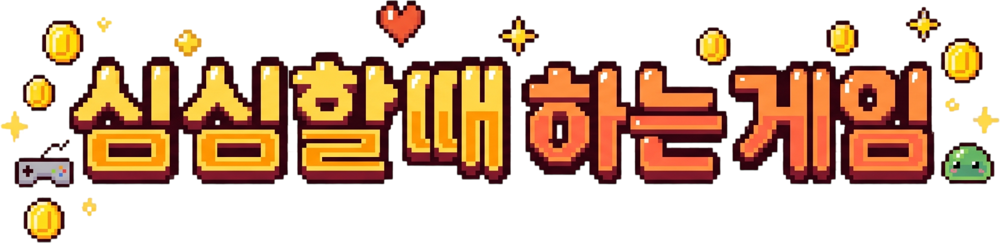
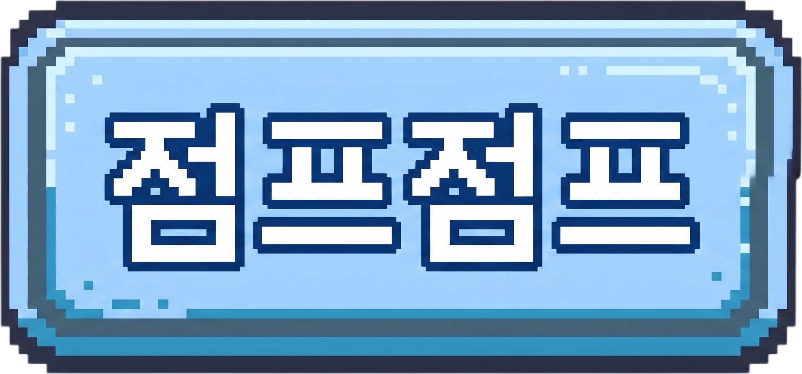
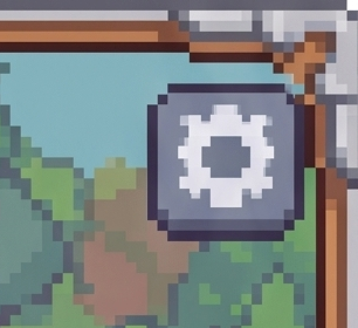
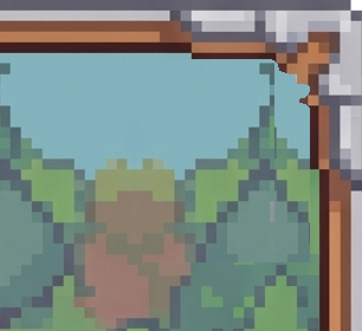

<title>1차 수정 리포트 반영</title>
<meta charset="utf-8">
<style>
  :root{
    --bg:#f7f6f3; --card:#fff; --ink:#1c1b19; --muted:#6b6862;
    --line:#e3e0da; --accent:#c2410c; --ok:#15803d; --warn:#b45309;
  }
  @media (prefers-color-scheme:dark){:root:not([data-theme="light"]){
    --bg:#16151a; --card:#1f1e24; --ink:#eceaf0; --muted:#a3a0ab;
    --line:#33313b; --accent:#fb923c; --ok:#4ade80; --warn:#fbbf24;
  }}
  :root[data-theme="dark"]{
    --bg:#16151a; --card:#1f1e24; --ink:#eceaf0; --muted:#a3a0ab;
    --line:#33313b; --accent:#fb923c; --ok:#4ade80; --warn:#fbbf24;
  }
  body{background:var(--bg);color:var(--ink);font:16px/1.65 "Malgun Gothic","Segoe UI",system-ui,sans-serif;
       margin:0;padding:40px 20px 80px}
  main{max-width:880px;margin:0 auto}
  h1{font-size:28px;line-height:1.3;margin:0 0 6px;letter-spacing:-.02em}
  .sub{color:var(--muted);margin:0 0 36px;font-size:14px}
  h2{font-size:19px;margin:44px 0 14px;padding-bottom:8px;border-bottom:2px solid var(--line)}
  h3{font-size:15px;margin:26px 0 8px;color:var(--accent)}
  section{background:var(--card);border:1px solid var(--line);border-radius:12px;padding:4px 24px 24px;margin-bottom:8px}
  .tw{overflow-x:auto;margin:14px 0}
  table{border-collapse:collapse;width:100%;font-size:14px;min-width:460px}
  th,td{padding:7px 10px;text-align:left;border-bottom:1px solid var(--line);vertical-align:top}
  th{font-weight:600;color:var(--muted);font-size:12.5px;text-transform:uppercase;letter-spacing:.04em}
  td.n{text-align:right;font-variant-numeric:tabular-nums}
  tr:last-child td{border-bottom:none}
  code{background:var(--bg);border:1px solid var(--line);border-radius:4px;padding:1px 5px;font-size:13px;
       font-family:Consolas,"Cascadia Mono",monospace}
  ul{padding-left:20px} li{margin:6px 0}
  ol{padding-left:22px} ol li{margin:8px 0}
  .tag{display:inline-block;font-size:12px;padding:2px 9px;border-radius:99px;border:1px solid currentColor;
       font-weight:600;vertical-align:middle}
  .ok{color:var(--ok)} .warn{color:var(--warn)} .bad{color:var(--accent)}
  .note{border-left:3px solid var(--warn);background:var(--bg);padding:12px 16px;border-radius:0 8px 8px 0;margin:16px 0}
  .note p{margin:6px 0}
  .lead{font-size:17px}
  .flow{background:var(--bg);border:1px solid var(--line);border-radius:8px;padding:14px 16px;margin:16px 0;
        font-family:Consolas,"Cascadia Mono",monospace;font-size:13px;line-height:1.7;overflow-x:auto;white-space:pre}
  figure{margin:0}
  .pair{display:flex;gap:14px;flex-wrap:wrap;margin:18px 0}
  .pair figure{flex:1 1 260px;min-width:220px}
  .pair img{width:100%;display:block;border:1px solid var(--line);border-radius:8px;background:var(--bg);
            image-rendering:pixelated}
  .pair figcaption{font-size:12.5px;color:var(--muted);margin-top:8px;text-align:center;line-height:1.5}
  .strip{background:var(--bg);border:1px solid var(--line);border-radius:8px;padding:14px;margin:16px 0}
  .strip img{width:100%;display:block;image-rendering:pixelated}
  .num{display:inline-block;min-width:1.7em;color:var(--accent);font-weight:700}
</style>

<main>
<h1>1차 수정 리포트 반영</h1>
<p class="sub">심심할 때 하는 게임 &middot; 2026-09-07 &middot; <code>@1차 수정 리포트.pdf</code> 5건 &middot; 배치 모드 검증 완료</p>

<section>
<h2>한 줄 요약</h2>
<p class="lead">보내 주신 <strong>5건 전부 반영했습니다.</strong> 화면 쪽 4건은 캡처로 확인했고,
<strong>발판 버그는 원인을 찾아 재현까지 시킨 뒤 고쳤습니다.</strong>
컴파일 오류 0건, 자동 플레이테스트 정상입니다.</p>

<div class="tw"><table>
<tr><th>#</th><th>요청하신 것</th><th>결과</th></tr>
<tr><td class="n">1</td><td>StartButton 위치 top 106 / bottom -106</td><td><span class="tag ok">완료</span> 아래로 106px</td></tr>
<tr><td class="n">2</td><td>@Title_Text 사용, 기존 글자는 제거</td><td><span class="tag ok">완료</span></td></tr>
<tr><td class="n">3</td><td>Lobby 이름표 변경 (글자를 그림으로)</td><td><span class="tag ok">완료</span></td></tr>
<tr><td class="n">4</td><td>Lobby 상단 톱니바퀴 제거</td><td><span class="tag ok">완료</span> 그림을 수정</td></tr>
<tr><td class="n">5</td><td>아래로 떨어져도 가끔 살아남음</td><td><span class="tag ok">고침</span> 원인 확인</td></tr>
</table></div>
</section>

<section>
<h2>지금 화면 <span class="tag ok">배치 모드 캡처</span></h2>
<p>플레이 모드에 들어가지 않고 뽑은 실제 화면입니다.
<code>JumpJump\JumpJump_Preview\</code> 에 있습니다.</p>

<div class="pair">
<figure>
  <figcaption><strong>타이틀</strong> &mdash; 이름이 그림으로 바뀌고 START 가 내려갔습니다 (1, 2번)</figcaption></figure>
<figure>
  <figcaption><strong>로비</strong> &mdash; 이름표가 그림이 되고 톱니바퀴가 사라졌습니다 (3, 4번)</figcaption></figure>
</div>

<p><span class="tag" style="color:var(--muted)">참고</span> 폰이 길쭉한 경우(20:9)도 같이 찍어 두었습니다.
<code>00_title_tall.png</code> / <code>00_lobby_tall.png</code> 입니다. 둘 다 자리가 그대로 맞습니다.</p>
</section>

<section>
<h2><span class="num">1</span> START 버튼 위치</h2>
<p>적어 주신 <strong>top 106 / bottom -106</strong> 은 Unity 인스펙터의 Top/Bottom 값이라
"크기는 그대로, 통째로 아래로 106px" 이라는 뜻으로 읽었습니다.
1080&times;1920 기준 106px 은 배경 높이의 약 5.5% 입니다.</p>

<div class="tw"><table>
<tr><th>값</th><th>전</th><th>후</th></tr>
<tr><td><code>TitleScreen.startCenter</code> 의 Y</td><td class="n">0.251</td><td class="n">0.196</td></tr>
</table></div>

<div class="note">
<p><strong>더 내리거나 올리고 싶으시면</strong> 코드가 아니라 인스펙터에서 고치시면 됩니다.
씬의 <code>TitleScreen</code> 을 고르고 <strong>Start Center</strong> 의 Y 값을 바꾸세요.
<strong>0.01 = 화면 높이의 1%</strong>, 즉 약 19px 입니다. 숫자를 <strong>키우면 올라가고, 줄이면 내려갑니다.</strong></p>
</div>
</section>

<section>
<h2><span class="num">2</span> 타이틀 이름을 그림으로</h2>
<p>글자로 그리던 "심심할 때 하는 게임" 을 없애고, <code>@Title_Text.png</code> 를 그 자리에 넣었습니다.</p>

<div class="strip"></div>

<p>가져오면서 <strong>투명한 여백을 자동으로 잘라 냈습니다.</strong>
2400&times;1309 &rarr; 2192&times;534 가 되어서, "배경 폭의 72%" 라고 적으면
눈에 보이는 글자가 정확히 그 폭이 됩니다.</p>

<div class="note">
<p><strong>글자 그림이 작거나 크게 느껴지면</strong> <code>TitleScreen</code> 인스펙터의
<strong>Title Width</strong>(지금 0.72 = 배경 폭의 72%)를 바꾸시면 됩니다.
세로 길이는 원본 비율대로 따라오므로 찌그러지지 않습니다.
자리를 옮기려면 <strong>Title Center</strong> 입니다.</p>
</div>

<p><span class="tag" style="color:var(--muted)">덤</span> 이 변경으로 <strong>안드로이드 한글 깨짐 위험이 크게 줄었습니다.</strong>
프로젝트에 한글 폰트를 넣지 않아서 폰에서 글자가 깨질 가능성이 남아 있었는데,
타이틀 이름과 로비 이름표가 둘 다 그림이 되면서 이제 글자로 그리는 곳은
게임 안의 점수 표시(영어와 숫자)뿐입니다.</p>
</section>

<section>
<h2><span class="num">3</span> 로비 이름표</h2>
<p>새로 주신 그림에 <strong>"점프점프" 가 이미 그려져 있어서</strong>, 그 위에 글자를 얹지 않도록 바꿨습니다.</p>

<div class="strip" style="max-width:420px"></div>

<h3>게임이 늘어날 때를 위해</h3>
<p>이름표가 게임마다 다른 그림이 되었으므로, <strong>아이콘과 똑같은 방식</strong>으로 굴러가게 만들었습니다.
작업 폴더에 번호를 맞춰 넣기만 하면 됩니다.</p>

<div class="flow">D:\00.JumpJump\
    @Game_01_Jump.png       ->  로비 칸의 동그란 아이콘
    @Name_01_점프점프.png    ->  그 아래 이름표          (새 규칙)

    @Game_02_두더지.png            게임을 늘릴 때는
    @Name_02_두더지.png            이렇게 두 장씩</div>

<p><strong>Build All Scenes 를 누르면</strong> 두 그림 모두 자동으로 프로젝트에 들어오고,
<code>GameCatalog.asset</code> 의 항목에 순서대로 붙습니다. <strong>코드는 여전히 안 고쳐도 됩니다.</strong>
기존 <code>@Panel_Name.png</code> 는 <code>@Name_01_점프점프.png</code> 로 이름만 바꿔 두었습니다.</p>

<div class="note">
<p><strong>이름표 그림에는 게임 이름이 그려져 있어야 합니다.</strong> 코드가 글자를 얹지 않기 때문입니다.
그림 없이 이름만 있는 게임은 이름표 없이 글자만 나옵니다.</p>
</div>
</section>

<section>
<h2><span class="num">4</span> 톱니바퀴 제거</h2>
<p>톱니바퀴는 코드가 만든 버튼이 아니라 <strong><code>Lobby.png</code> 그림 안에 그려져 있었습니다.</strong>
그래서 그림 자체를 고쳤습니다. 오른쪽 위 자리를 <strong>바로 옆 숲을 좌우로 접어</strong> 덮었습니다.
접는 선에서 그림이 그대로 이어지기 때문에 이음매가 보이지 않습니다.</p>

<div class="pair">
<figure>
  <figcaption><strong>전</strong> &mdash; 액자 오른쪽 위에 톱니바퀴 판</figcaption></figure>
<figure>
  <figcaption><strong>후</strong> &mdash; 숲과 하늘로 메움. 액자 나무 모서리는 그대로</figcaption></figure>
</div>

<div class="note">
<p><strong>원본은 지우지 않았습니다.</strong> 톱니바퀴가 있는 그림을
<code>D:\00.JumpJump\Lobby_원본_톱니바퀴포함.png</code> 로 남겨 두었습니다.
되돌리시려면 그 파일을 <code>@Lobby.png</code> 로 덮어쓰고 Build All Scenes 를 누르시면 됩니다.</p>
<p>나중에 <strong>설정 화면을 진짜로 만들 때</strong>는 톱니바퀴를 그림이 아니라
누를 수 있는 UI 버튼으로 새로 얹는 편이 낫습니다. 그래야 눌리는 자리와 보이는 자리가 어긋나지 않습니다.</p>
</div>
</section>

<section>
<h2><span class="num">5</span> 떨어져도 살아남던 버그 <span class="tag bad">원인 확인</span></h2>
<p class="lead">보신 게 맞습니다. <strong>화면 밖에 보이지 않는 발판이 실제로 남아 있었습니다.</strong></p>

<h3>왜 그랬나</h3>
<p>발판은 화면 아래로 사라져도 바로 없애지 않습니다. 다시 쓰려고 <strong>카메라 아래 4유닛까지 살려 둡니다.</strong>
그런데 낙사 판정선(화면 아래끝에서 1유닛 더 아래)이 <strong>그보다 위에 있었습니다.</strong>
그 사이 구간에 놓인 발판은 <strong>보이지도 않는데 밟히는</strong> 발판이었습니다.</p>

<div class="flow">                 ┌─────────────────────────┐
   화면 위       │                         │
                 │       플레이어          │
                 │         ↓ 떨어짐        │
   화면 아래끝 ───┼─────────────────────────┤ ← 여기까지만 눈에 보임
                 │   ▓▓▓▓  안 보이는 발판  │    그런데 발판은 살아 있음
   낙사 판정선 ───┤                         │ ← 여기를 지나야 게임 오버
                 │   ▓▓▓▓  안 보이는 발판  │
                 └─────────────────────────┘
                       발판이 재활용되는 선</div>

<h3>어떻게 고쳤나</h3>
<p>착지 판정을 하는 <code>PlatformManager.FindLanding()</code> 이 이제
<strong>화면 아래끝보다 낮은 발판은 후보에서 아예 뺍니다.</strong>
"보이는 발판만 밟을 수 있다" 는 규칙이 코드에 들어간 셈입니다.
확정하신 규칙 &mdash; <em>화면 아래로 벗어나면 즉시 게임 오버</em> &mdash; 와도 맞습니다.</p>

<h3>정말 고쳐졌는지</h3>
<p>말로만 하지 않고 <strong>배치 모드에서 그 상황을 직접 만들어 확인했습니다.</strong>
20칸까지 올라간 시점을 잡아 보니 <strong>화면 밖에 살아 있는 발판이 실제로 2개</strong> 있었고,
그중 하나(17번 칸) 위로 떨어뜨려 봤습니다.</p>

<div class="tw"><table>
<tr><th>규칙</th><th>결과</th></tr>
<tr><td>고치기 전 (화면을 안 봄)</td><td><span class="tag bad">착지함</span> &mdash; 살아남음. 이게 보신 증상입니다</td></tr>
<tr><td>고친 뒤 (화면 아래끝 기준)</td><td><span class="tag ok">통과함</span> &mdash; 그대로 떨어져 게임 오버</td></tr>
</table></div>

<p>버그를 재현시킨 뒤 같은 자리에서 수정을 확인한 것이라, <strong>증상이 사라진 게 우연이 아닙니다.</strong>
확인용으로 쓴 임시 스크립트는 확인 후 지웠습니다.</p>

<div class="note">
<p><strong>바뀐 손맛</strong> &mdash; 이제 한 칸 아래로 실수해서 떨어지는 것까지는 살지만,
<strong>두 칸 넘게 떨어지면 확실히 죽습니다.</strong> 전에는 운 좋으면 살아났습니다.
너무 매몰차게 느껴지시면 <code>GameConfig.asset</code> 의 <strong>Death Margin</strong>(지금 1)을
2~3으로 올리면 화면 밖에서 버티는 시간이 조금 늘어납니다.</p>
</div>
</section>

<section>
<h2>검증 결과</h2>
<div class="tw"><table>
<tr><th>확인한 것</th><th>결과</th></tr>
<tr><td>컴파일</td><td><span class="tag ok">통과</span> 오류 0건</td></tr>
<tr><td>씬 3장 굽기 (타이틀 / 로비 / 게임)</td><td><span class="tag ok">통과</span></td></tr>
<tr><td>그림 가져오기</td><td><span class="tag ok">통과</span> Title_Text 2192&times;534, 이름표 1761&times;821 로 여백 잘림</td></tr>
<tr><td>타이틀 / 로비 캡처 (9:16, 20:9)</td><td><span class="tag ok">통과</span> 4장</td></tr>
<tr><td>게임 화면 캡처</td><td><span class="tag ok">통과</span> 9장</td></tr>
<tr><td>자동 플레이테스트 (120초)</td><td><span class="tag ok">통과</span> 봇 111칸 / 247m / 31,400점, FELL DOWN</td></tr>
<tr><td>발판 버그 재현 &rarr; 수정 확인</td><td><span class="tag ok">통과</span> 위 5번 참고</td></tr>
</table></div>
<p>Unity 에디터를 켜지 않고 전부 명령으로 돌린 결과입니다.
에디터에서 직접 보시려면 <strong>Tools &gt; Arcade &gt; Build All Scenes</strong> 를 누른 뒤 Play 하시면 됩니다.</p>
</section>

<section>
<h2>확인 부탁드릴 것</h2>
<ol>
<li><strong>5건이 원하신 대로 나왔는지.</strong> 특히 START 버튼 위치와 타이틀 글자 그림 크기입니다.
어긋나면 위에 적은 인스펙터 값만 바꾸면 되니 편하게 말씀 주세요.</li>
<li><strong>떨어졌을 때 느낌.</strong> 이제 확실히 죽습니다. 너무 빡빡하면 Death Margin 을 올리겠습니다.</li>
<li><strong>배경 전환</strong> &mdash; 200m 까지 올라가야 첫 전환이 보입니다. 아직 못 보셨으면 같이 봐 주세요.
급하게 느껴지면 <code>backdropBlendMeters</code> 를 30에서 60~100 으로 올리면 부드러워집니다.</li>
<li><strong>APK 를 다시 구울까요?</strong> 지금 폴더의 APK 는 9월 6일 14:49 것이라
<strong>타이틀도, 로비도, 새 배경도, 이번 수정도 안 들어 있습니다.</strong>
폰에서 한글이 깨지지 않는지 확인할 겸 한 번 구워 보는 게 좋습니다. (10분 이상, 백그라운드로 돌립니다)</li>
</ol>
</section>

<section>
<h2>같이 손본 문서</h2>
<div class="tw"><table>
<tr><th>파일</th><th>무엇을 고쳤나</th></tr>
<tr><td><code>CLAUDE.md</code></td><td>이번 수정 5건 정리, 다음에 물어볼 것 갱신</td></tr>
<tr><td><code>Assets\Shell\README.md</code></td><td>미니게임 추가 방법에 이름표 그림 추가, 톱니바퀴 항목 갱신</td></tr>
</table></div>
<p>다음에 이어서 작업할 때는 <code>CLAUDE.md</code> 부터 읽으면 지금 상태가 그대로 이어집니다.</p>
</section>

</main>
